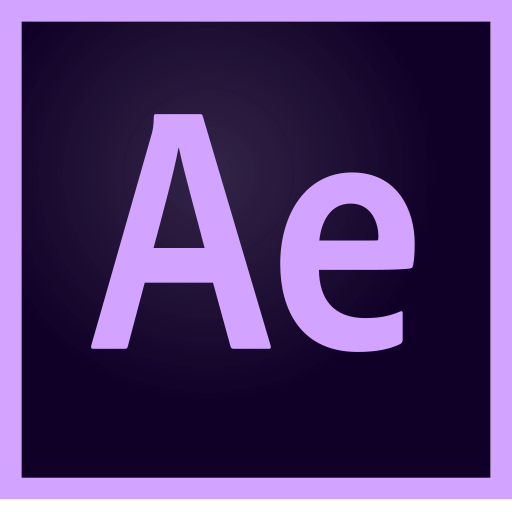

Software
Blender
Blender es un programa informático multi plataforma, dedicado especialmente al modelado, iluminación, renderizado, animación y creación de gráficos tridimensionales. También de composición digital utilizando la técnica procesal de nodos, edición de vídeo, escultura (incluye topología dinámica) y pintura digital. En Blender, además, se pueden desarrollar vídeo juegos ya que posee un motor de juegos interno.
Unity 
Unity es un motor de videojuego multiplataforma creado por Unity Technologies. Unity está disponible como plataforma de desarrollo para Microsoft Windows, OS X, Linux. La plataforma de desarrollo tiene soporte de compilación con diferentes tipos de plataformas (Véase la sección Plataformas objetivo). A partir de su versión 5.4.0 ya no soporta el desarrollo de contenido para navegador a través de su plugin web, en su lugar se utiliza WebGL. Unity tiene dos versiones: Unity Professional (pro) y Unity Personal.
Adobe Animate 
Adobe Animate (anteriormente como Adobe Flash Professional, Macromedia Flash, y FutureSplash Animator) que recibe uno de los programas más famosos de la casa Adobe, junto con sus hermanos Adobe Illustrator y Adobe Photoshop. Se trata de una aplicación de creación y manipulación de gráficos vectoriales con posibilidades de manejo de código mediante un lenguaje de scripting llamado ActionScript. Animate es un estudio de animación que trabaja sobre "fotogramas" y está destinado a la producción y entrega de contenido interactivo para diferentes audiencias de todo el mundo sin importar la plataforma.
Unreal Engine
Unreal Engine es un motor de juego de PC y consolas creado por la compañía Epic Games, demostrado inicialmente en el shooter en primera persona Unreal en 1998, y siendo la base de juegos como Unreal Tournament, Deus Ex, Turok, Tom Clancy's Rainbow Six: Vegas, America's Army, Red Steel, Gears of War, BioShock, BioShock 2, BioShock Infinite, Star Wars Republic Commando, Batman: Arkham Asylum, SMITE o Mass Effect. También se ha utilizado en otros géneros como el rol y juegos de perspectiva en tercera persona.
After Effects 
Adobe After Effects es una aplicación que tiene forma de estudio destinado para la creación o aplicación en una composición, así como realización de gráficos profesionales en movimiento y efectos especiales, que desde sus raíces han consistido básicamente en la superposición de capas. Adobe After Effects es uno los softwares basados en línea de tiempo más potentes del mercado junto con Autodesk Combustion y Eyeon Fusion.
Una de las principales fortalezas del programa es que existen una gran cantidad de plugins desarrollados por otras compañías que ayudan a aligerar las cargas de trabajo en lo que a aplicación de efectos se refiere. A partir de las versiones 6.5 y 7 mejora su capacidad para manejar archivos de gráficos y vídeo de distintos formatos. Por otro lado, su interfaz resulta familiar a muchos editores dedicados a la post-producción, lo que lo convierte en la elección ideal para la mayoría de profesionales.